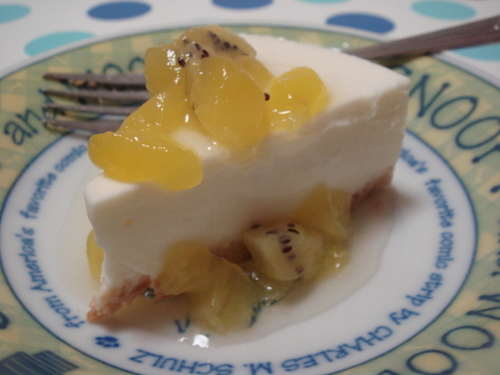

This is about me page.
My name is sea_mountain. (or sometimes 'seamountain' or 'sea-mountain' or 'sea__mountain' :)
sea.mountain.mail at gmail.com

This is about technical contents. Most of articles are about Ruby or iOS technial conferences.
I sometimes translate Ruby5 and I write briefly about in Japanese.
I stopped posting to this blog. My aim changed.
This blog is for reading report. When I read a book about programming, I try to write some comment. This is my record of reading.